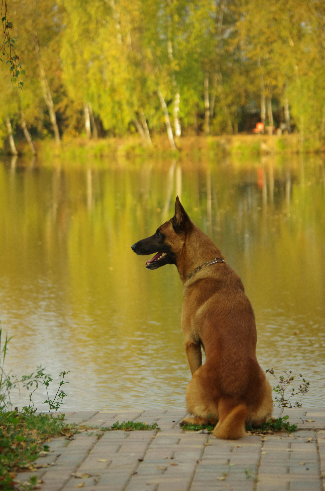

O viață alături de câini

Iubirea mea față de câini este datorită faptului că de mic copil am crescut lângă ei, am avut o cățelușă de rasă Pechinez și una de Ciobănesc German, în prezent am o cățelușă de tip Ciobănesc Belgian Malinois.
Despre Ciobanescul Belgian Malinois
Să ai un Malinois înseamnă să ai un partener de lucru extraordinar.
- Inteligență extremă: Acești câini au o capacitate de învățare uimitoare. Pot procesa comenzi complexe și sunt capabili să anticipeze dorințele stăpânului, fiind folosiți la scară largă în misiuni de salvare și securitate datorită minții lor ascuțite.
- Energie fără limite: Un Malinois are nevoie de activitate constantă. Nu este doar un câine de companie, ci unul care excelează atunci când i se oferă provocări mentale și exerciții fizice intense.
- Loialitate protectoare: Această rasă dezvoltă un devotament profund față de familie. Sunt câini curajoși care își protejează instinctiv căminul și persoanele dragi, oferind un sentiment de siguranță prin vigilența lor naturală.
Povestește-mi despre câinele tău
Ce rasă de câine ai sau care este rasa ta preferată? Lasă-mi un mesaj mai jos:
⬅ Înapoi la blogul principal